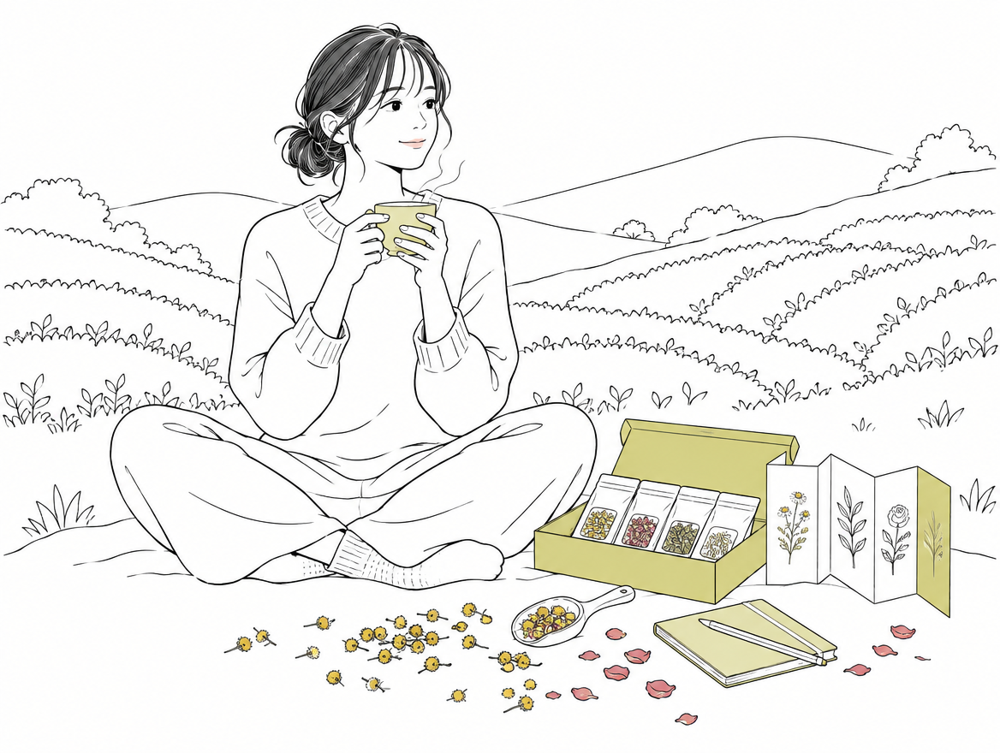
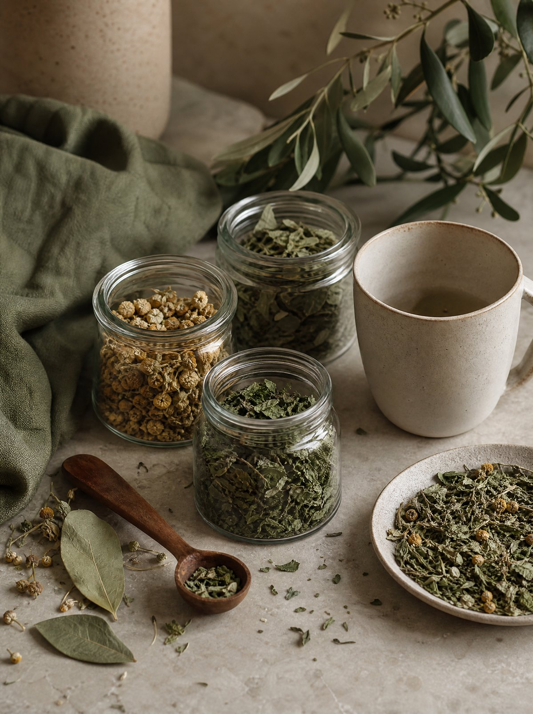

즐기는 법How to enjoy
차를 알아갈수록 한 잔은 깊어집니다. 나의 취향을 찾는 법부터 우리는 법, 보관하는 법, 그리고 누군가에게 들려주고 싶은 이야기까지.
취향 (趣向)[명사] 하고 싶은 마음이 생기는 방향. 또는 그런 경향.

Ref. 표준국어대사전
How to brew
고르기 → 담기 → 붓기 → 우리기 → 기록하기
01 · CHOOSE
고르기아코디언북을 펼쳐 오늘의 기분에 맞는 원료를 고릅니다.
02 · MEASURE
담기레시피 비율대로 원료를 덜어 빈 티백에 담습니다. 종이 스쿱 한 스푼이 기준.
03 · POUR
붓기레시피의 온도로 물을 천천히 붓습니다. 허브 95~100°C, 곡물 100°C.
04 · STEEP
우리기레시피의 시간만큼 우립니다. Taste 3~5분, Depth 7분. 색이 바뀌는 순간을 지켜보세요.
05 · NOTE
기록하기좋았던 비율과 다음에 바꿔 볼 것을 노트에 남깁니다.
“그런데 저는 블렌딩을 해본 적이 없어요.” 괜찮습니다. 처음엔 전문가 레시피 그대로 따라 해보고, 그다음엔 하나를 더하거나 덜어서 바꿔보고, 마지막엔 나의 맛으로. 노트에 남긴 비율이 레시피가 됩니다.
How to store빛과 습기를 피해,
빛과 습기를 피해,
향이 가장 좋은 한 달 안에.
원료는 파우치째 아코디언북에 꽂아 두면 그대로 보관함이 됩니다. 직사광선과 습기를 피하고, 개봉한 원료는 향이 가장 좋은 한 달 안에 즐겨 주세요.
곡물 원료(Depth)는 볶은 향이 날아가기 쉬우니 파우치 입구를 꼭 접어 두고, 꽃 원료(Taste)는 눌리지 않게 세워서. 냉장 보관은 권하지 않습니다 — 꺼낼 때 생기는 물기가 향을 가져갑니다.

Tea trivia
누군가에게 들려주고 싶은 이야기
- 01카페인이 있나요?
- 없습니다. 카페인이 없는 허브와 곡물로만 구성해 저녁이나 늦은 밤에도 편하게 즐길 수 있어요.
- 02키트 하나로 몇 잔이나 마실 수 있나요?
- 150ml 기준 약 27잔. 레시피마다 쓰는 양이 달라 조금씩 차이가 납니다.
- 03블렌딩 경험이 전혀 없는데 괜찮을까요?
- 네. 처음에는 전문가 추천 레시피를 따라 만들어 보세요. 익숙해지면 재료 하나를 더하거나 덜어 보고, 비율을 조금씩 바꾸면서 나만의 블렌딩을 만들 수 있습니다.
- 04히비스커스를 넣으면 왜 색이 붉어지나요?
- 히비스커스는 꽃이 아니라 꽃받침을 말린 원료로, 물에 닿으면 붉은 색소가 빠르게 우러납니다. 한 꼬집만으로도 잔의 색이 달라져 눈으로 먼저 즐기는 블렌딩의 중심이 됩니다.
- 05Taste와 Depth를 섞어도 되나요?
- 됩니다. 두 키트를 하나씩 가지면 허브와 곡물을 섞는 교차 블렌드까지 만들 수 있어요. 「밀크티 무드」가 그 첫 번째 예입니다.
- 06다 쓴 뒤 재구매는 어떻게 하나요?
- 취향의권리.com에서 마음에 든 원료만 골라 낱개로 구매할 수 있도록 순서대로 열립니다.